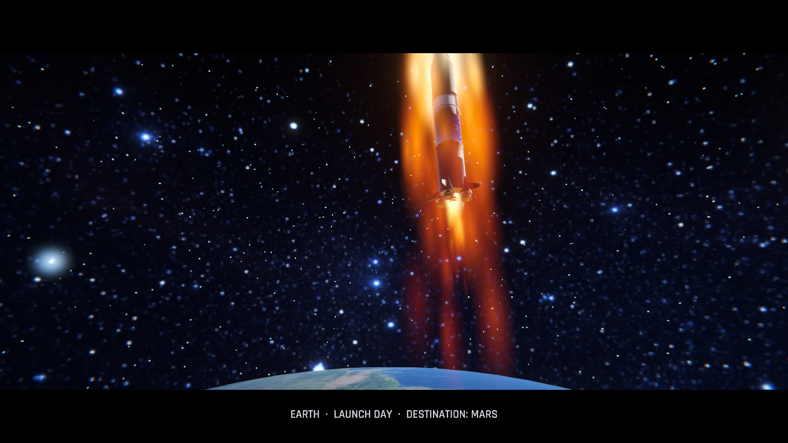
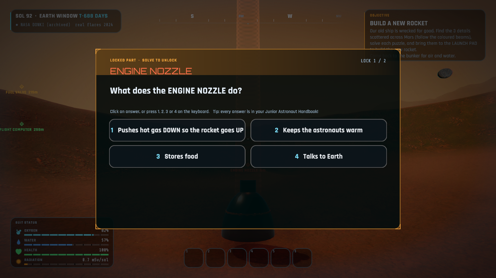
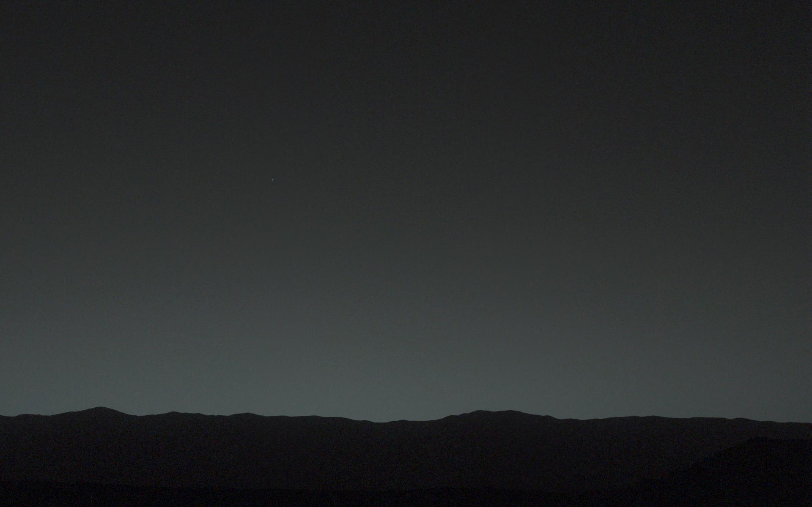
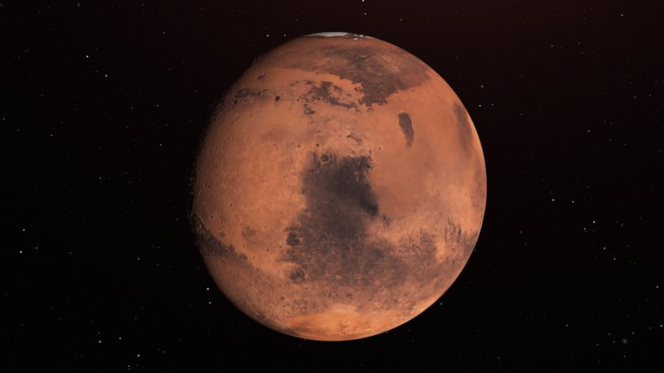
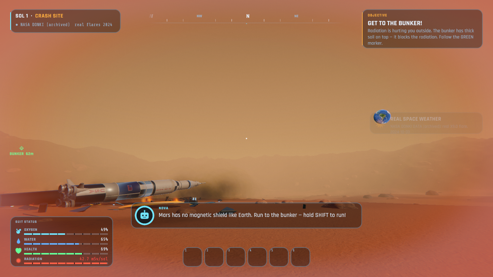
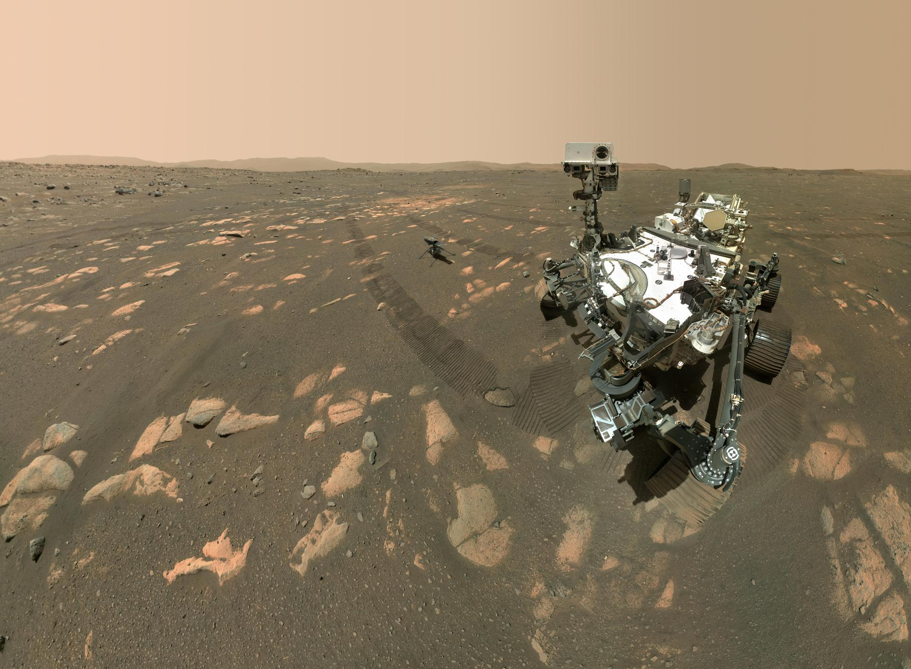
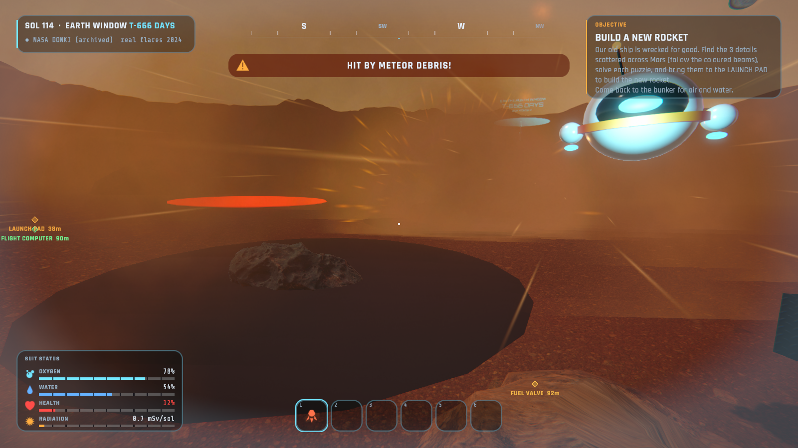

NASA Space Apps Challenge 2026
Junior Astronaut
Handbook
MISSION MARS
Learn how rockets work, how astronauts stay alive on Mars,
and how to get home. Read this book first — then play the game!
Welcome
Hello, Junior Astronaut!
This book is your training manual. Everything you learn here, you will need in the game Mission Mars: The 2-Year Window.
NOVAHi! I'm NOVA, your helper robot. I'll be with you in the book AND in the game. Let's train together!
How to use this book
- Read each page. The pictures are real NASA photos.
- Answer the quiz at the end of the book.
- Play the game. The game asks the same questions to unlock rocket parts — so you'll already know the answers!
Your mission
Your spaceship crashes on Mars. 🚀💥 You must find air, water and shelter, then find 3 lost rocket details, build a new rocket, and fly home when Earth comes back around.

In the game, you solve puzzles like this one to unlock rocket parts. The answers are in this book!
2
Chapter 1
Meet Mars, the Red Planet

Mars, photographed by NASA's Viking orbiters.
Mars is the 4th planet from the Sun. It looks red because its dirt has rust in it — the same thing that makes old bikes orange!
A day on Mars is called a SOL. It lasts 24 hours and 39 minutes.
38%
Mars gravity is only 38% of Earth's. You could jump almost 3 times higher!
−60°C
Mars is very cold. Astronauts need warm space suits.
95%
Mars air is 95% carbon dioxide. We can't breathe it!
NOVAMars has no magnetic shield like Earth. That's why the Sun's radiation is dangerous there. Remember this — it's important in the game!
3
Chapter 2
Home Is Far Away

Real photo by NASA's Curiosity rover: the tiny bright dot in the Mars evening sky is EARTH!
From Mars, our whole planet looks like a little star. Earth is about 225 million kilometres away. Even a radio message, which is super fast, needs 3 to 22 minutes to get there.
The 2-year window: Earth and Mars go around the Sun at different speeds. They line up for the shortest trip home only about every 26 months. Astronauts must wait for this "launch window".

In the game, look up at the sky to find Earth. A 2-year countdown shines on top of your base.
4
Chapter 3
Parts of a Rocket
🧠 Flight Computer (top)
The rocket's brain. It steers and decides when to turn the engines on.
⛽ Fuel Tank & Fuel Valve (middle)
The tank holds the fuel. The valve works like a tap: it opens and closes the fuel flow.
🔥 Engine Nozzle (bottom)
Pushes hot gas DOWN, so the rocket goes UP!
NOVAIn the game, these 3 parts are lost on Mars after the crash. You'll find them and put them back in the right place!
5
Chapter 4
Push Down, Go Up!

Saturn V launching Apollo 11 to the Moon, 1969.
NASA's Artemis I launch, 2022.
Try this: blow up a balloon and let it go. The air rushes out the back, and the balloon zooms forward. A rocket works the same way!
The engines burn fuel and push hot gas down through the engine nozzle. The gas pushes down… and the rocket is pushed up. Scientists call this Newton's Third Law.
6
Chapter 5
How to Build a Rocket
Rockets are built from the bottom up, like a tower of blocks:
- Engines first. The engines and engine nozzle go at the very bottom, because the fire must come out underneath.
- Then the fuel tank and fuel valve. They sit right above the engines so the fuel can flow down into them.
- Last, the flight computer and the top. The brain rides at the top, safe and far from the fire.

In the game, the new rocket starts as a blue hologram. Every part you bring makes one section real!
7
Chapter 6
Air and Water on Mars

MOXIE being put inside NASA's Perseverance rover.
💨 Making air: MOXIE
MOXIE is a real NASA machine. It takes Mars air (carbon dioxide) and turns it into oxygen we can breathe. It worked on Mars in 2021!

NASA's orbiters found lots of ice under the Mars ground.
💧 Finding water: ice
Mars has ice hidden under the ground. Astronauts can dig it up and melt it into drinking water.

In the game, carry MOXIE and the Ice-to-Water machine into your bunker to fill your OXYGEN and WATER bars.
8
Chapter 6 · part 2
How the Machines Work
In the game you carry two machines from the crash site into your bunker. Here is how they really work:
💨 MOXIE — the Oxygen Maker
- A pump sucks in Mars air. It is mostly carbon dioxide (CO2).
- MOXIE heats the air until it is very hot — about 800 °C!
- A special plate splits CO2 and keeps the oxygen (O2).
- The oxygen fills the bunker, so astronauts can breathe.
Real fact: on Mars, NASA's MOXIE made 122 grams of oxygen — enough for a small dog to breathe for about 10 hours!
💧 The Ice-to-Water Machine
- A drill digs down to the ice hidden under the Mars ground.
- A heater melts the ice into water.
- Filters clean the water so it is safe to drink.
- Astronauts drink from the tap — and can even split water to make more oxygen!
In the game, when you pick up a machine, a card shows these steps. Carry it to its blue spot in the bunker and press E!
9
Chapter 7
Mars Dangers (and How to Stay Safe)
☀️ Solar flares
Big blasts from the Sun send out radiation. NASA watches the Sun every day (the DONKI database). Stay safe: hide in a shelter with thick walls.
🌪️ Dust storms
Mars storms can cover the whole planet! In 2018 one stopped NASA's Opportunity rover. Stay safe: follow your markers and save oxygen.
☄️ Meteors
Mars has very thin air, so space rocks don't burn up. NASA finds new craters every year. Stay safe: move away from where they fall!

The 2018 global dust storm on Mars (NASA Mars Reconnaissance Orbiter).

In the game, a REAL solar flare measured by NASA warns you — run to the bunker! Watch out for red circles: meteors!
10
Chapter 8
Our Robot Friends on Mars

Perseverance takes a selfie with Ingenuity, the little Mars helicopter (2021).
Perseverance is a car-sized rover that explores Mars, takes rock samples and tested MOXIE. Ingenuity was the first helicopter ever to fly on another planet!
NOVAYou can find Perseverance and Ingenuity in the game too. Go say hi!
11
Training check
Junior Astronaut Quiz
Tick the right answer. These are the same puzzles that unlock the rocket parts in the game!
1. What does the ENGINE NOZZLE do?
Pushes hot gas down so the rocket goes upKeeps the astronauts warmStores foodTalks to Earth
2. Where do the ENGINES go on a rocket?
On the topAt the bottomIn the middleOn the side door
3. What does the FUEL VALVE do?
Turns on the lightsOpens and closes the fuel, like a tapMakes oxygenSteers the rocket
4. Which machine makes OXYGEN from Mars air?
MOXIEThe fuel tankThe radioThe parachute
5. The FLIGHT COMPUTER is like the rocket's…
LegsLunchboxBrainWheels
6. How often do Earth and Mars line up for the trip home?
Every dayEvery weekAbout every 2 yearsNever
Answers: 1 – pushes hot gas down · 2 – at the bottom · 3 – opens and closes the fuel · 4 – MOXIE · 5 – brain · 6 – about every 2 years
12
Before you play
Your Mission, Step by Step
- Wake up next to the crashed ship. Look around — find Earth in the sky.
- Solar flare! Run to the bunker. The soil on top blocks the radiation.
- Save yourself: carry MOXIE (air) and the Ice-to-Water machine (water) into the bunker.
- Find the 3 rocket details: Engine Nozzle, Fuel Valve, Flight Computer. Follow the coloured light beams.
- Solve each puzzle — the answers are in this book!
- Build the new rocket on the launch pad: engines, then fuel, then the computer.
- Wait for the window, press LAUNCH… and fly home! 🌍

Careful out there: meteors and dust storms!
13
Now it's your turn
Scan to Play!
You finished your training, Junior Astronaut. Scan this code to get the game Mission Mars.
Note: I'm sorry — we don't provide our APK file for this QR code yet. The game will be available here soon. Until then, you can play it with your teacher on the computer at our NASA Space Apps demo!
NOVASee you on Mars, Commander! Remember: shelter from flares, keep your oxygen up, and build your rocket from the bottom up!
14
About this book
Credits
Made for the NASA Space Apps Challenge 2026 — challenge: Build a Junior Astronaut Mission Trainer. This book and the game Mission Mars: The 2-Year Window go together: read first, then practise.
Photos (NASA, public domain)
Apollo 11 Saturn V launch (S69-39961) · Artemis I launch (NHQ202211160030, NASA/Bill Ingalls) · Mars globe (PIA00407, Viking) · Earth seen from Mars (PIA17936, Curiosity) · MOXIE (PIA24203) · Mars (PIA23515) · 2018 dust storm (PIA22329, MRO) · Perseverance & Ingenuity selfie (PIA24542). Images courtesy NASA/JPL-Caltech.
Real NASA science used
DONKI space-weather database (solar flares) · Curiosity RAD radiation data · Perseverance MOXIE · MRO SHARAD (underground ice) · Opportunity rover (2018 dust storm) · Mars–Earth launch windows.
Game screenshots
From Mission Mars (Unity). 3D models: NASA 3D Resources; Astronaut by Jungle Jim (Sketchfab, CC-BY); Earth textures by khanhnamn063 (CGTrader).
Not an official NASA publication.
15